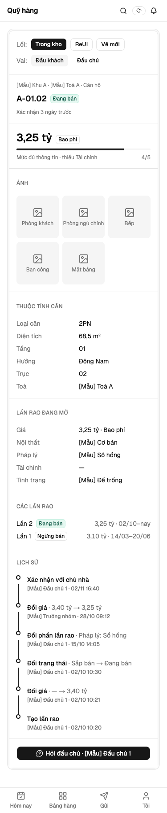
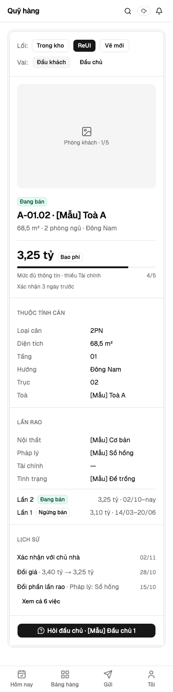
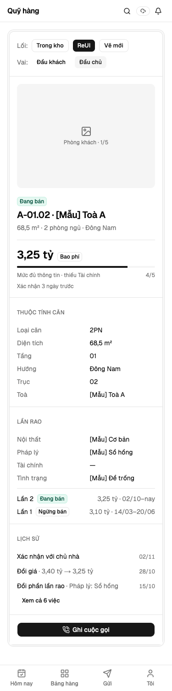
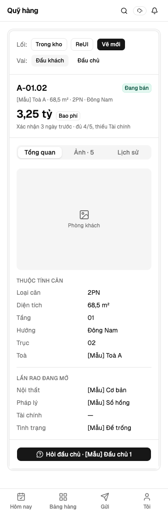

Hồ sơ căn trên điện thoại — ba lối
Cùng dữ liệu mẫu, khổ 375, chụp trọn trang. Màn chỉ có trên điện thoại (khổ dưới 768 px) nên không có ảnh 1440. Nút chính dính đáy theo vai: đầu khách «Hỏi đầu chủ», đầu chủ giữ căn «Ghi cuộc gọi». Bản chạy: /proto/ho-so-dien-thoai?loi=…&vai=… trên máy dev dãy H.
Máy khuyên: ReUI — khối đích chủ kho đã chọn 02/11 (giữ ở Hỏi-3 hàng 33), đã có bản
chuyển thể ở trang khách nên dùng lại được.
Trong kho
Hồ sơ căn đang chạy (solution-crm-4 chuyển thành cột): đầu → Giá và mức đủ → Ảnh → Thuộc tính căn → Lần rao → Các lần rao → Lịch sử → «Hỏi đầu chủ» dính đáy cho người không giữ căn
- Động cơ
- Đúng màn đang chạy hôm nay: không dựng gì mới, người dùng đã quen thứ tự mục.
- Đánh đổi
- Dài nhất (gần 1.800 px ở 375): ảnh nhỏ, thông số chính chìm trong bảng thuộc tính, lịch sử đầy đủ nằm tận đáy; đầu chủ giữ căn không có nút chính dính đáy.
ReUI · khuyên
product-detail-5 dựng lại từ bản chuyển thể của trang khách: ảnh lớn lướt ngang → mã căn · toà + Diện tích · Phòng ngủ · Hướng → hộp giá (giá, phí, mức đủ, xác nhận) → Thuộc tính căn, Lần rao, Lịch sử gọn → một nút dính đáy. Không có phần chủ nhà.

- Động cơ
- Khối đích đã chọn cho màn: ảnh lớn, tên căn với ba thông số chính rồi hộp giá — đọc được căn ngay màn đầu, cùng dáng trang khách.
- Đánh đổi
- Ảnh lớn đẩy giá xuống nửa dưới màn đầu; lịch sử chỉ hiện ba việc gần nhất (chạm «Xem cả» mới thấy hết), mức đủ là phần thêm ngoài khối gốc.
Vẽ mới
Ghép Tabs + Badge + Timeline: đầu màn gọn (mã căn, giá, mức đủ) rồi ba ngăn Tổng quan · Ảnh · Lịch sử, nút dính đáy
- Động cơ
- Ngắn nhất: mã căn và giá ngay đầu màn, mỗi ngăn vừa khoảng một màn, không cuộn dài.
- Đánh đổi
- Ảnh và lịch sử nằm sau một chạm; tự ghép nên phải ghi «Chỗ hở» kèm hạn xem lại, và lệch dáng với trang khách.